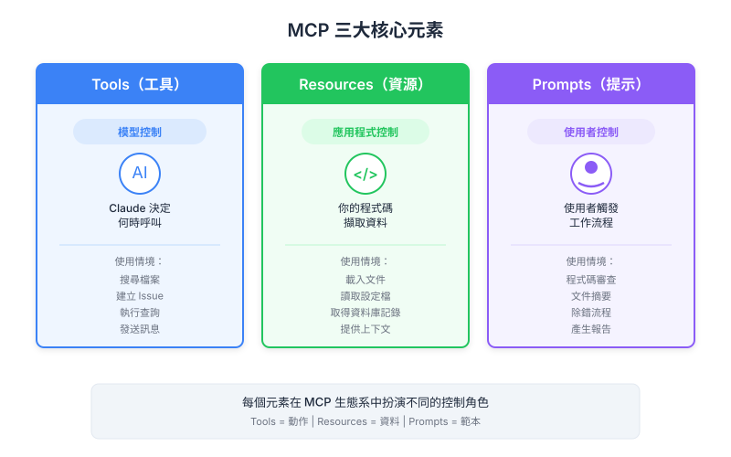

| 项目 | 细节 |
|---|---|
| 考试范畴 | D2 — Tool Design & MCP Integration (18%) |
| Task Statements | 2.3 (MCP server primitives), 2.4-2.6 (resource/tool/prompt design), 1.1 (agentic architecture) |
| 来源 | introduction-to-model-context-protocol / 04-assessment / Lesson 15 |
MCP 有三个 AI 产品构建模块 — Tools（AI 决定）、Resources（app 决定）、Prompts（用户决定）— 知道该用哪个是 PM 影响的最重要架构决策。
把 MCP 驱动的产品想象成一间智慧办公室：
| 构建模块 | 办公室类比 | 谁决定 | 产品示例 |
|---|---|---|---|
| Tools | 你请的专业顾问 — 他们决定跑什么分析、何时跑 | Claude（AI） | Claude 在幕后执行计算 |
| Resources | 研究助理在会议前预先收集简报资料 | 你的 app | Google Drive 文档注入聊天 context |
| Prompts | 员工遵循的作业手册 — 他们选择何时使用 | 用户 | 用户点击「摘要」工作流程按钮 |
你规格的每个 AI 功能都归入三个类别之一，基于谁应该控制它：
何时使用：AI 需要能力来自主完成任务。
| 产品场景 | 为什么用 Tools |
|---|---|
| AI 在聊天中计算运费 | AI 决定何时需要计算 |
| AI 查询库存数据库 | AI 根据对话决定检查库存 |
| AI 发送通知 email | AI 决定发送的正确时机 |
PM 考量：Tools 对用户不可见。用户不点按钮；AI 自己决定。
何时使用：你的应用需要数据用于显示或预加载 context。
| 产品场景 | 为什么用 Resources |
|---|---|
| 自动补全下拉显示可用文档 | App 为 UI 获取列表 |
用户输入 @report.pdf 引用文件 |
App 将内容注入 prompt |
| 侧边栏显示相关文档 | App 决定什么 context 相关 |
PM 考量：Resources 让体验感觉即时。数据在 AI 开始思考前就预加载好了。
何时使用：你想要用户明确触发的预定义、可重复工作流程。
| 产品场景 | 为什么用 Prompts |
|---|---|
/format slash command |
用户决定重新格式化 |
| 「生成周报」按钮 | 用户按需触发 |
| 「翻译成西班牙文」菜单选项 | 用户启动工作流程 |
PM 考量：Prompts 封装专业知识。用户不需要自己写指令就能获得专家级结果。
撰写 AI 功能的 PRD 时，用这个流程：
问题 1：「谁应该决定何时发生？」
- AI 自主决定 → Tool
- App 预加载数据 → Resource
- 用户明确触发 → Prompt
问题 2：「这涉及读取数据还是执行动作？」
- 读取数据用于显示或 context → Resource
- 执行有潜在副作用的动作 → Tool
- 遵循预定义工作流程 → Prompt
问题 3：「如果出错会怎样？」
- 严重后果（财务、合规） → Tool + 防护（hooks）
- 轻微 UX 问题 → 任何 primitive，按控制模型选
- 工作流程不一致 → Prompt（为了可重复性）
想象一个文档管理 AI 助手：
@mention 自动补全 — 用户输入 @ 时，app 从 MCP server 获取可用文档/format 命令 — 用户选择文档并触发格式化工作流程edit_document tool 以 markdown 重写内容三个 primitives 都需要。Resources 处理数据，prompts 处理工作流程，tools 处理动作。
| 错误 | 后果 | 正确做法 |
|---|---|---|
| 对只读数据显示指定 tool | 更慢的 UX（tool call 开销） | 用 resource — 即时 context 注入 |
| 对用户触发的工作流程指定 tool | 结果不一致（AI 可能不完全遵循） | 用 prompt — 测试过的模板，一致的输出 |
| 对有副作用的动作指定 resource | 违反只读契约 | 用 tool — 只有 tools 该有副作用 |
| 对自主 AI 行为指定 prompt | 用户每次都要手动触发 | 用 tool — 让 AI 决定 |
| 维度 | Tools | Resources | Prompts |
|---|---|---|---|
| 控制者 | AI（model） | App 代码 | 用户 |
| 触发 | AI 推理 | App 逻辑 | / 命令或按钮 |
| 副作用？ | 有 | 无（只读） | 无（只有消息） |
| UX 模式 | 不可见 | @mention |
Slash commands |
| 产品类比 | 顾问 | 研究助理 | 作业手册 |
| 考试关键字 | 「自主地」、「Claude 决定」 | 「预加载」、「UI 数据」 | 「工作流程」、「slash command」 |
Key Insight
三方控制模型是产品设计和 CCA 考试中最重要的单一概念。每个「该用哪个 primitive？」的问题都归结为：「谁应该控制这个交互？」Model = Tool、App = Resource、User = Prompt。掌握这个框架就能回答任何 D2 场景题。
| 正面 | 背面 |
|---|---|
| MCP 三个 server primitives 及其控制者是什么？ | Tools（Claude model-controlled）、Resources（app 代码 controlled）、Prompts（用户 controlled） |
| 解决大多数「哪个 primitive？」决策的单一问题是什么？ | 「谁应该控制这个交互？」— Model = Tool、App = Resource、User = Prompt |
| 三个 MCP primitives 的办公室类比是什么？ | Tools = 专业顾问（AI 决定）、Resources = 研究助理（app 预先收集）、Prompts = 作业手册（用户遵循） |
| PM 何时该在 PRD 中指定 Tool？ | AI 需要自主决定执行动作时（计算、API 调用、副作用） |
| PM 何时该在 PRD 中指定 Resource？ | App 需要只读数据用于 UI 显示或在 AI 推理前预加载 context |
| PM 何时该在 PRD 中指定 Prompt？ | 用户应明确触发预定义、可重复工作流程时（slash commands、按钮） |
| PM 在 primitive 选择中最大的错误是什么？ | 该用 Resource 的场景用了 Tool — 为只读数据增加延迟和 tool call 开销 |
| 三个 primitives 在产品中如何协作？ | Resources 供给数据到 UI、Prompts 让用户触发工作流程、Tools 让 Claude 执行动作完成工作流程 |